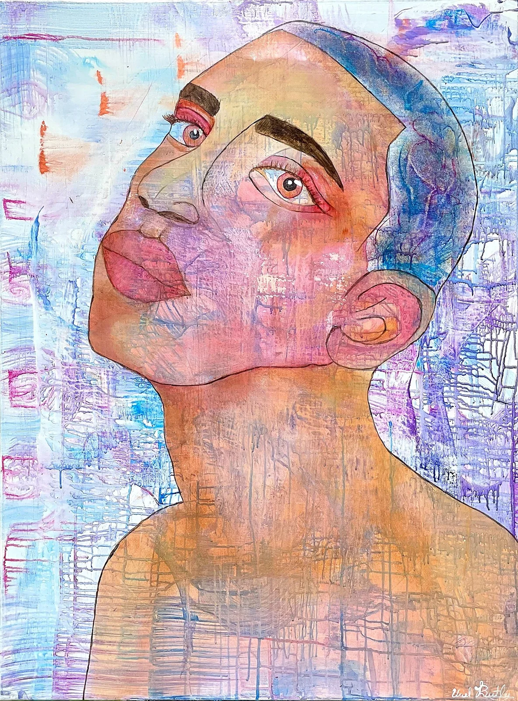

● THE BRONX / NEW YORK / VISUAL ARTIST
URIEL ALEXANDER / ART STUDIOPortraits with presence.
Color without permission.
Layered paintings of people, places, and everything that refuses to fit neatly into a single version of itself.
FIGURATION / COLOR / PLACE01—08 / SELECTED WORKS

ON THE COVER / FEATURED PAINTINGHe Started in Color01 / THE WORK
A little impossible to ignore.


02 / THE PRACTICE
A face can tell one story.
The layers tell the rest.
Across portraits and city scenes, Uriel Alexander works with expressive color, visible marks, and overlapping forms. The paintings hold more than one perspective at once—sometimes tender, sometimes confrontational, always unmistakably human.
Meet the artist ↗03 / THE INVITATION
The work caught your eye.
Let's talk about it.
Interested in an original, a commission, a gallery collaboration, or future fine-art prints? Start a conversation directly with the studio.